الفصل الثالث · براكتيكم
براكتيكم
براكتيكم. المنصّة خلف علامة تعليمية مصرية.
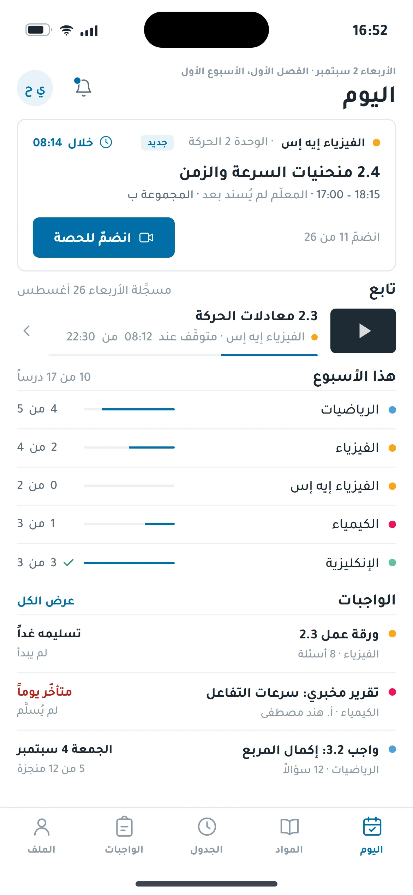
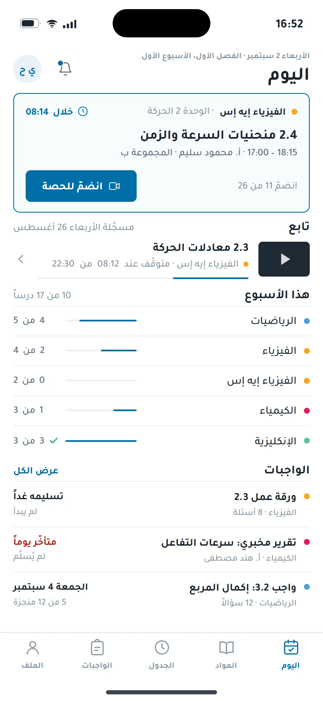
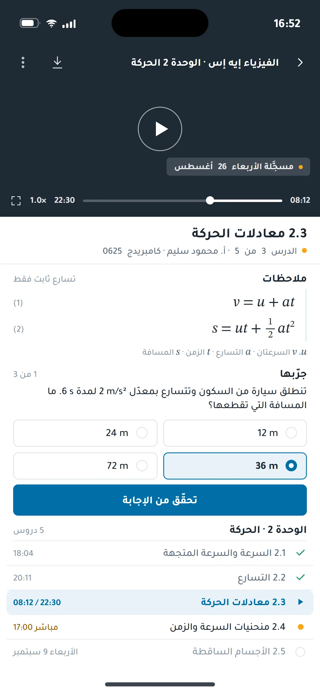
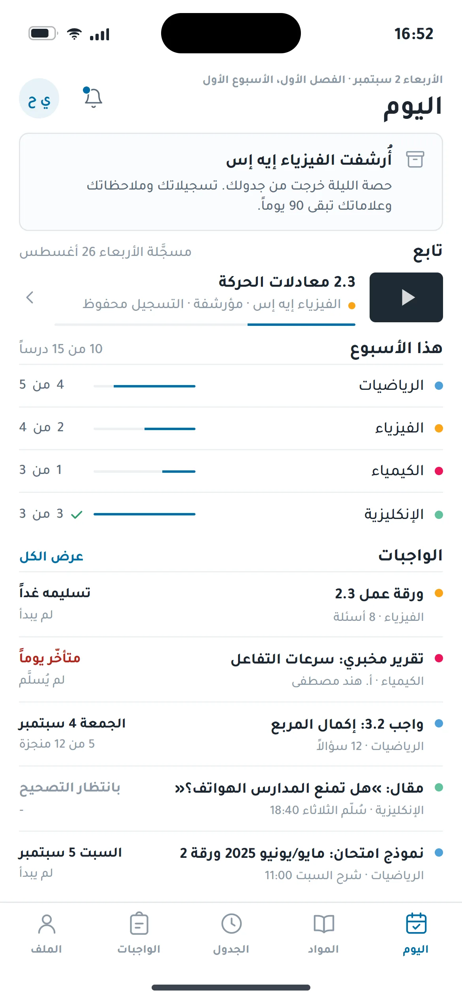
الحركة الأولى · واجهتان، حقيقة واحدة
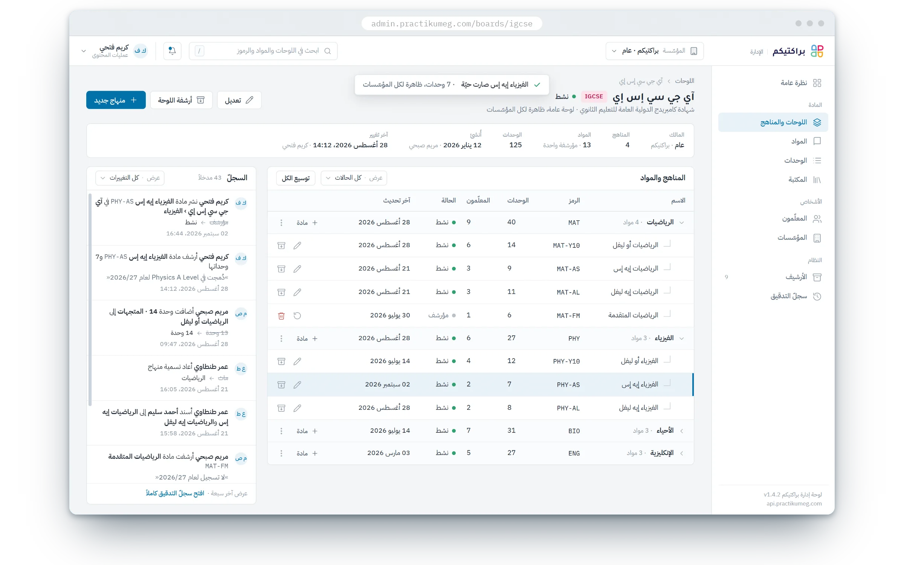
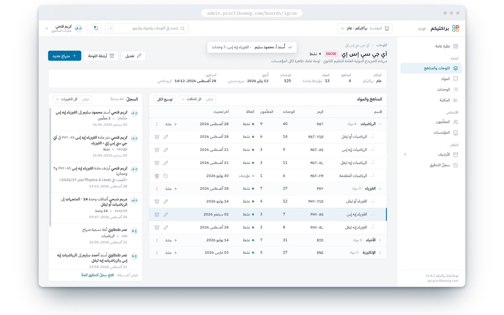
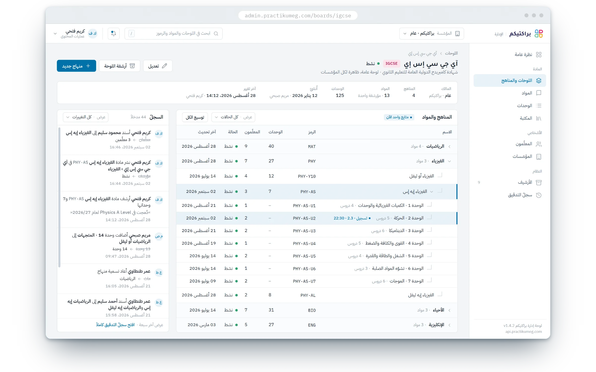
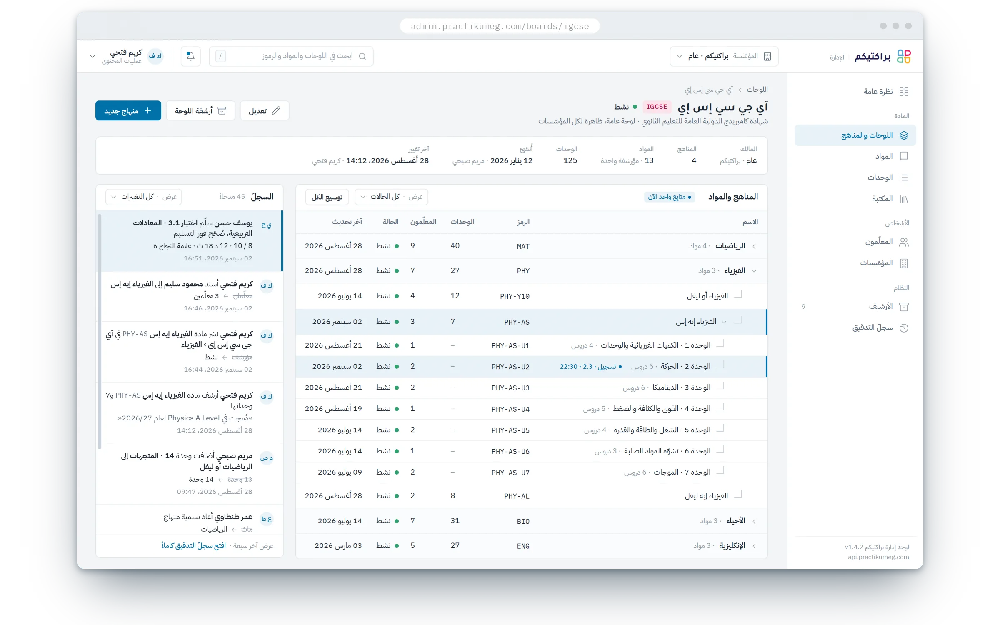
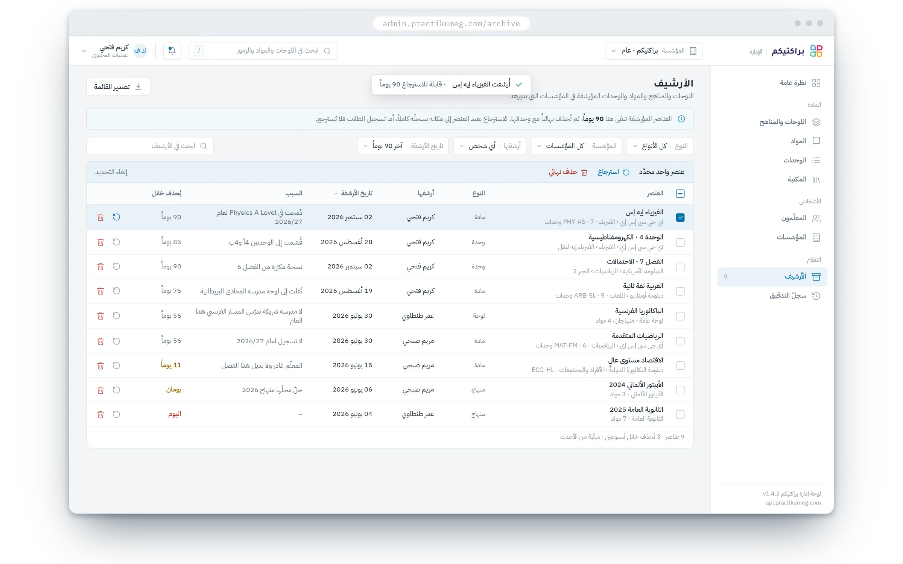
الإدارة · اللوحة-
01
اللوحة · نشر
اللوحة تنشر مادة فيزياء إيه إس، فتنزل الحصّة في يوم الطالب قبل أن يعيد التحميل.
-
02
اللوحة · تعيين معلّم
يُعيَّن الأستاذ محمود سليم على المادة، فيظهر اسمه على البطاقة نفسها التي ينظر إليها الطالب.
-
03
الطالب · فتح التسجيل
يفتح الدرس المسجّل 2.3، فيُظهر صفّ الوحدة في اللوحة التسجيل وهو يُشاهَد الآن.
-
04
الاختبار · تصحيح فوري
يسلّم الاختبار فيُصحَّح لحظتها 8 من 10، ويحتفظ سجلّ اللوحة بالنتيجة كاملة.
-
05
اللوحة · أرشفة
تؤرشف اللوحة المادة، فتغادر جدول الطالب ويبقى التسجيل والعلامات تسعين يوماً.
القصة
نموذج بيانات واحد خلف واجهتين: لوحة تحرّر التصنيف، وتطبيق يقرأه مباشرة.
عن العميل
براكتيكم شركة تعليم إلكتروني في القاهرة للمسار الدولي (آي جي سي إس إي وإيه إس وإيه ليفل): حصص مباشرة، تسجيلات، اختبارات أسبوعية، حساب لولي الأمر، وإدارة خلفية تحفظ تصنيف المناهج مرتّباً.
التحدي
- 01
تصنيف واحد لمدارس كثيرة: مؤسسة، ثم لوحة، ثم منهاج، ثم مادة، ثم وحدة، مع أرشفة واسترجاع وسجلّ تغييرات.
- 02
تطبيق للطالب ولوحة إدارة لا يختلفان أبداً.
- 03
حصص مباشرة وتصحيح فوري على واجهة برمجية واحدة.
المنهج
نموذج بيانات واحد خلف واجهتين: الإدارة تحرّر التصنيف، وتطبيق الطالب يقرأه مباشرة؛ الامتحانات والاختبارات تُصحَّح لحظة تسليمها؛ والحصص المباشرة تمرّ عبر ويب سوكِت.
دوري
بنيت خدمات المنصّة الأساسية: الأسئلة والامتحانات، الاختبارات والتصحيح الفوري، الطلاب وأولياء الأمور والمستخدمين بأدوارهم، الدروس والتسجيلات، الحضور والدرجات، على واجهة برمجية وويب سوكِت واحدة تخدم تطبيق الطالب ولوحة الإدارة معاً.
الحركة الثانية · يوم طالب
يوم طالب
التطبيق خطّة يوم لا لوحة مؤشرات: حصّة الليلة، الدرس الذي توقّف عنده، ما عليه من واجبات، ونتيجة اختبار صُحِّح لحظة تسليمه. الترتيب زمني، والشاشة الواحدة تحمل قراراً واحداً.
-
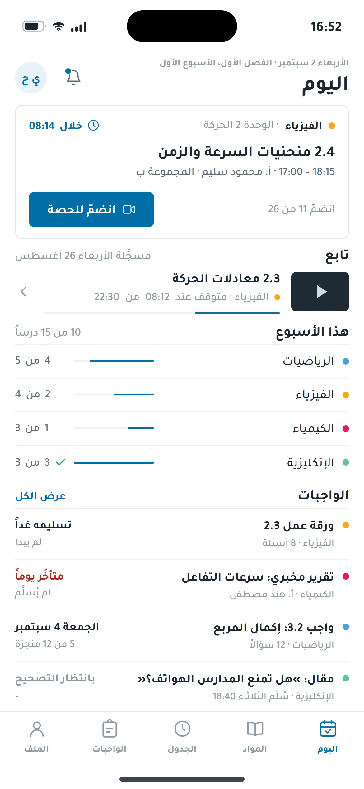
16:52
اليوم · الحصّة بعد ثماني دقائق
-
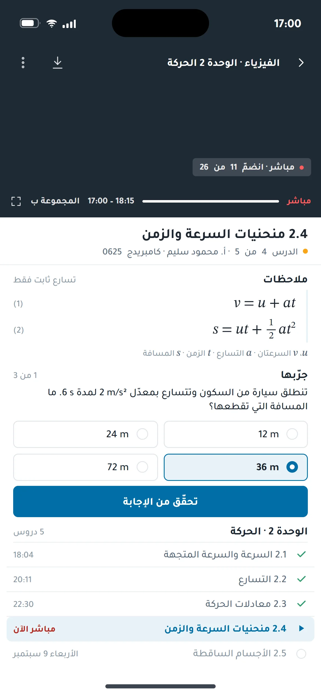
17:00
الحصّة المباشرة · 11 من 26 دخلوا
-
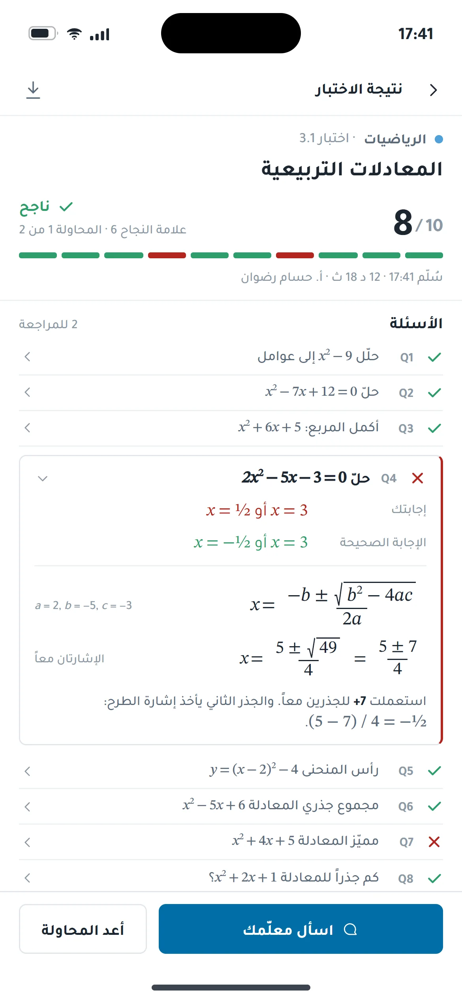
17:41
الاختبار مُصحَّح · 8 من 10 لحظة التسليم
شاشتان. حقيقة واحدة.
الرياضيات الفيزياء الكيمياء الإنكليزية
الحركة الثالثة · خلف المكتب
خلف المكتب
لا شيء يُحذف. المنهاج المؤرشف يبقى تسعين يوماً قابلاً للاسترجاع، ومعه سبب الأرشفة ومن قام بها ومتى؛ والسجلّ يحفظ كل تغيير: ما كان، وما صار.
اللوحات والمناهج
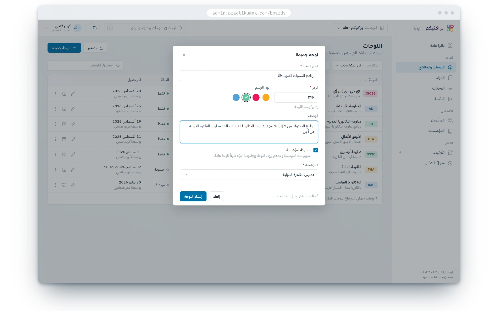
الأرشيف
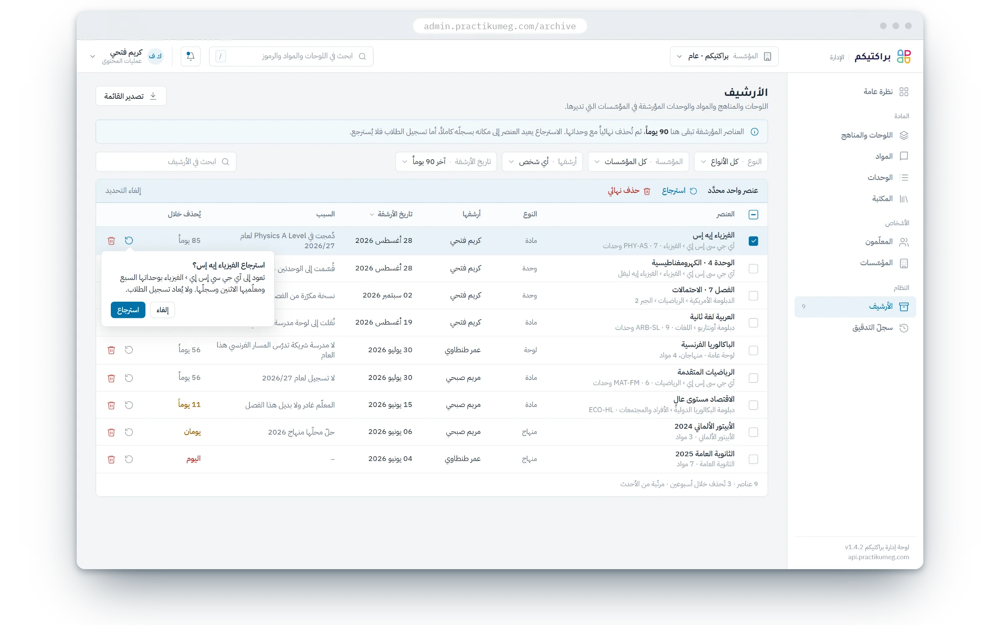
الطالب · الشجرة نفسها على الويب
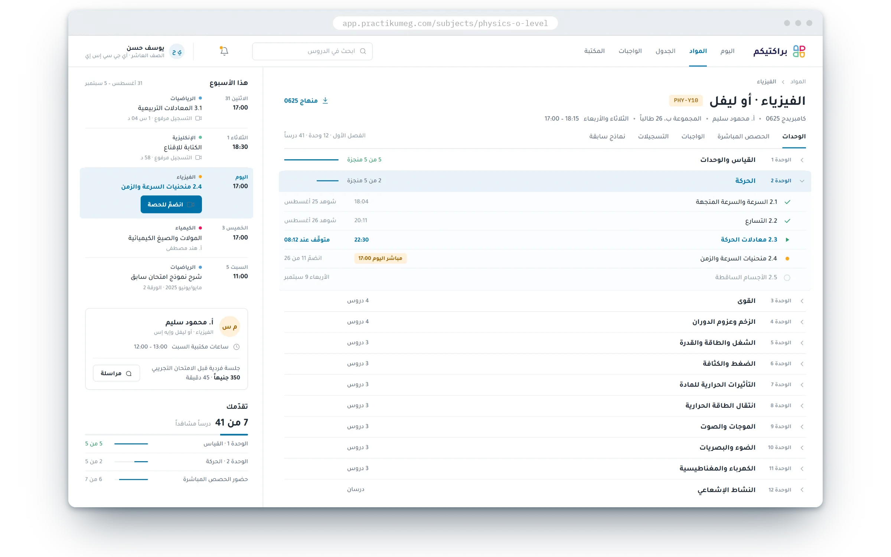
تسعون يوماً للاسترجاع، ثم يُحذف، وكل تغيير يحتفظ بما كان وما صار
النتائج
طالب
على المنصّة
ولي أمر
حساب واحد لكل عائلة
عضو فريق
معلّمون وفريق محتوى
الفصل الثالث · اكتمل
حقل الفصل التالي يغمر الشاشة